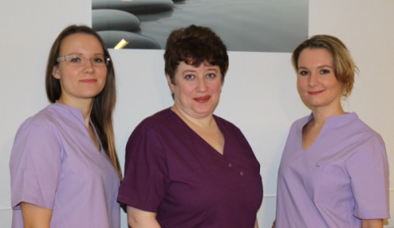

Frauenärztliche Praxis Larisa Anokhina
Praxisphilosophie
Liebe Patientinnen!
Mit dieser Homepage möchten wir Ihnen die Möglichkeit geben, sich über uns und unsere Arbeit zu informieren. Ob Sie Fragen zur Vorsorge oder Verhütung haben, eine Beratung zur Familienplanung wünschen oder Probleme in der Menopause haben - wir sind für Sie da.
Außerdem begleiten wir Sie bei jedem Schritt Ihrer Schwangerschaft.
Es erwarten Sie:
- ein motiviertes, Patientinnen orientiertes Praxisteam,
- eine kompetente ärztliche Ansprechpartnerin.
Wir freuen uns auf Ihren Besuch.
Praxisteam
- Katharina Stab, MFA
- Larisa Anokhina Frauenärztin
- Nadja Jeske, MFA
In meiner Praxis erwartet Sie ein gut eingespieltes und qualifiziertes Team, das sich auf Ihren Besuch freut. Ihre Sorgen und Probleme können Sie uns gerne anvertrauen. Wir bemühen uns Ihnen schnellstmöglichst und bestens zu helfen. Rufen Sie uns einfach an und überzeugen Sie sich selbst!
Praxis
In unserer Praxis werden seit vielen Jahren mit großem Einsatz und medizinischem Know-how der Gesamtbereich der Frauenheilkunde abgedeckt.
Sämtliche Lebensabschnitte der Frau werden von uns kompetent betreut. Die Empfängnisverhütung (neue Methoden wie Gyne-Fix Spirale, Behandlung mit EllaOne), die Sexualität, der Kinderwunsch, die Schwangerschaft, die Behandlung von gutartigen und bösartigen Erkrankungen und die Betreuung der Frau in den Wechseljahren und natürlich auch im höherem Alter (auch im Altenheim) gehören zum Leistungsspektrum unserer Praxis.
Als Kassenärztin kann ich Ihnen alle unten genannten Leistungen im Wege des Sachleistungssystems über Ihre Krankenversicherungskarte anbieten. Daneben bietet meine Praxis natürlich auch Leistungen, die nicht von den gesetzlichen oder auch privaten Krankenkassen getragen werden, wie zum Beispiel Behandlungen in Zusammenhang mit Kinderwunsch bei Frauen, die älter sind als 40 Jahre.
Durch die ganzheitliche Ausrichtung meiner Praxis ist eine ganzheitliche Betreuung unserer Patientinnen möglich. In allen Lebenslagen können sich unsere Patientinnen auf Ihre vertraute Frauenärztin verlassen und müssen sich nicht in eine in der Regel anonymere Behandlung eines externen Labors oder einer externen Klinik begeben.